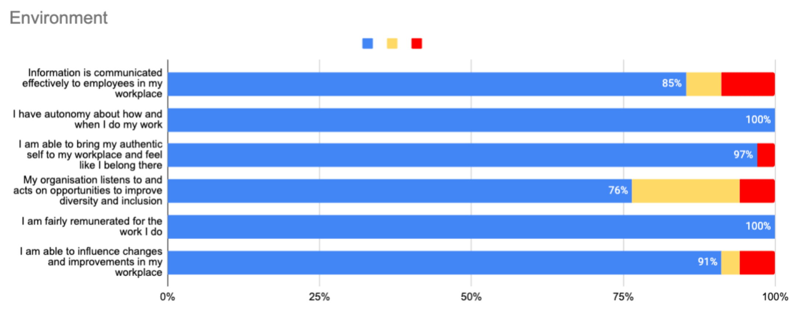

This post is a lightly edited transcript of a talk given at NZ Tech Rally in May 2025. I am no longer at Runn and some of this ideas/polices may have changed since this talk was given.
G'day, everyone. I'm excited to be here and share some of my journey with you. My name is Rowan, and I'm one of the co-founders and the [now ex] CTO at Runn. I lead an engineering team of 15 people across seven countries. Runn as a whole is 50 people across 13 countries.
I really love startups. Runn is the third where I'm a founder, and it's the sixth I've been involved in. Many of us are drawn by the excitement and innovation, but honestly, that comes with relentless hustle, long hours, high stress, and a life fueled by caffeine. I'm getting too old for that shit. It's exhausting, it's unsustainable, and it's not the life I wanted to lead heading into my forties. But despite all this, I really wanted to stay involved in startups.
When co-founding Runn, I reflected on my 15 years of experience. The places where I thrived were the ones where my manager trusted us, where we were empowered to figure out the how. The places where my performance suffered most were the ones where everything was planned to the nth degree. We had detailed task lists, and our decisions were reviewed and second guessed all the time. In fact, my best experiences were often with managers who weren't from an engineering background, because they focused on the problem, not the solution. They trusted us, maybe because they had no choice, but it worked.
This experience made me question what I'd seen and heard from Silicon Valley's startup world, mainly the Silicon Valley TV show, which I'm going to take as Bible truth. The perceived key to success was being involved in every detail, every decision, part of every conversation, what's now commonly known as "going into founder mode." But in my experience, where trust and transparency were high, teams soared. We retained staff and knowledge, and we had a much better work-life balance. I do admit I worked at one startup where the opposite, high stress and long hours led to huge success. So the Silicon Valley way can work.
When I came into Runn, I wanted to build a company that could achieve incredible results while allowing for a great work-life balance. I set three core goals: hire and retain talented people; build a high performing engineering team that delivers on company goals; and do it in a way that gives everyone, the staff, the founders, and, most importantly, me, more time and energy for life outside of work.
Runn hasn't yet become a superstar startup, but we've done pretty well. We have high expectations and big goals, and we've pursued them with a people first approach. We designed our policies from the ground up: a four day workweek, globally remote and async practices, and equal, transparent pay. Seriously, you can go to our website and see the pay. You might say that isn't easy, and to paraphrase JFK, we do these things not because they are easy, but because they are hard. And because they are hard, they give us an unfair advantage and the best opportunity for success. If you want to create sustainable, high performing teams, the kind that thrive, grow, produce results, and stick around, you may need to do it the hard way.
So how did we achieve high performance and genuine work-life balance? The answer wasn't a complex management framework, a book I read, or a LinkedIn hack. It was something simpler and more human: trust and transparency. Forget the endless meetings, micromanagement, and being involved in every detail. Building a culture of radical trust and transparency unlocked peak performance and gave people more control of their own lives.
It starts with the right people. If you want high-performing teams where people avoid burnout and enjoy their work, you need people you can trust. That requires a decidedly non-Silicon Valley approach. We all know tech interviews can be weird: obscure algorithms we'll never use, whiteboard coding like the internet or AI doesn't exist, questions about moving Mount Fuji with a spoon, and the hunt for mythical "ninja unicorns." At Runn, we weren't looking for mystical creatures or even the best coders. We were looking for great humans who happen to know how to code, people who love building things and whom we can genuinely trust. Hiring is critical. In our engineering team, it's priority number one. It's detailed, deliberate, and we invest a huge amount of time. Our core principle: it's better to say no to ten great candidates than to accidentally say yes to one person who isn't the right fit. Yes, that has meant spending over 100 hours on a hiring round and hiring no one, try explaining that to the rest of leadership. We know we miss out on fantastic people. It's not about them; it's about fiercely protecting team dynamics. One wrong hire erodes trust and creates extra work and stress for everyone.
So how do we filter for this? First, it's a team effort. Interviews are shared with the people who will work alongside the candidate. Second, we prioritize the human element. Do we want to work with this person, especially when things go wrong? Will they grow here? What happens if we leave them alone to do their thing? Do we feel we can trust them? Technical skills matter, we have a three hour pair programming interview to attest to that but the main filter isn't the code you wrote or how fast you built a feature; it's how you worked together. The standout rule is that everyone the candidate speaks to must absolutely want to work with them. If anyone says "no," "maybe," or "I guess so," it's a no from us. That's why we end up saying no to great people and why we're yet to make a wrong hire. The takeaway: hire for character, potential, and trustworthiness first. Be patient. Hiring is the single most important decision you can make, and it lays the foundation for what comes next.
Okay, so we've hired trustworthy, talented people we want to work with. What's next? Empower them and create a high performing team. The enemy of trust, and a massive drain on time and energy, is micromanagement. It kills morale, slows innovation, doesn't scale, and it's far less exciting than building things. Instead, at Runn we build processes around autonomy enabled by trust.
We've built this on a variation of Shape Up from 37signals. We work in repeating eight week cycles divided into six weeks of project work and two weeks of cooldown. We create small teams, two engineers and one product person, kept deliberately small for agility, quick decision making, and to avoid the dreaded merge conflict.
Teams get a "pitch": a well defined problem with a rough sketch, ideas for possible approaches, and maybe some areas to avoid. There's no massive spec, no technical solution handed down, and no finished designs. And then we trust them. We leave it in their hands. They have huge autonomy for six weeks: the scope, the technical approach, how they work together, how they split the work pretty much everything. They self manage and keep each other accountable. We do have a defined team lead to keep things organized and on track, but they manage it themselves. We also rotate people every cycle; each cycle is a new project and a new team. This creates connections, shares knowledge, keeps people engaged, and most importantly, builds trust.
If we change teams every eight weeks, how do we decide who works on what? Doesn't that take a lot of time? I haven't told you what Runn does yet. We help organizations manage their projects with a focus on finding the right people to work on each project, a space unfortunately called "resource management." So what do we do? We ask them. The single most important thing we do when deciding who will work on a project is ask engineers what they want to work on. Yes, we still use our software to help decide especially when everyone puts their hand up for the coolest project that cycle. But we believe that engaging with our team and trusting them to choose the projects where they'll be most effective, learn the most, and feel most interested leads to highly engaged teams and the best outcomes when things go right, and especially when they go wrong.
After our six week project, we have a two week cooldown. Engineers have free choice on what they work on, and we trust them to use their time productively on what's most important to the business. Often, that means adding final touches to the project. Other times, it's fixing bugs, building internal tooling, removing tech debt, or adding a feature they've always wanted to see in Runn. In fact, some of our most loved features came from this self directed time.
What about bigger changes? We practice the often talked about but rarely implemented idea of "forgiveness over permission." As my team can attest, this is pretty controversial even at Runn. If someone wants to implement a big change, they post it in a "resolutions" channel on Slack. To do this, they must take ownership, implement it, document it, and even build a team if needed. You post it, you own it. Posting publicly gives people the chance to object or discuss, but otherwise, posting it means you do it now.
So what's my role in all this? If you asked my team, they might say I "stay out of it." That's pretty true, though I call it being intentionally distant. I trust them implicitly and trust them to pull me in when they need me. I've seen my team set goals I thought were impossible, only to prove me wrong time and again. When you trust people, they can blow past your expectations. Yes, we've also run over many times, everywhere I've worked has, but I haven't worked in many places where we've also exceeded our own expectations as often.
Building this hyper-trust environment isn't easy. It has its own problems and requires ongoing commitment. But focusing on trust, from hiring to processes to people, has been hugely successful for us, for our staff, and for me personally. My key takeaways: trust enables autonomy. Hire trustworthy people, give them clear problems, prioritize their interests, keep teams small, give them space, and trust their decisions. Hiring and engineering process are crucial, but trust and transparency need constant reinforcement across the entire organization.
Many of us have heard the saying, "People don't leave companies; they leave managers." I'm going to call bullshit on that. It's business-speak that moves responsibility from leadership and culture down to an individual lower in the hierarchy. It lets organizations avoid looking in the mirror at their own policies and their lack of trust and transparency. Yes, a bad manager can ruin an otherwise great job but there's more to it. Quick show of hands: who has left a great job because of a difficult manager? A third to half the room. And who has left a job where the manager was fine even great but the culture, pay, policies, or environment weren't good enough? That's the entire room. People leave bad situations. That's why trust needs to be woven into the fabric of the business, preferably from its foundations.
For us, it started with radical trust and transparency on day one: equal and transparent salaries, everyone knows they're paid the same as teammates at the same level; automatic, non-performance based pay rises, decoupling performance conversations from salaries so we can speak openly and honestly about how people are going. Trust also means we invest generously in our team. We pay well. If we want talented people, we should pay as much or more than they can get elsewhere on top of everything else we do. At the end of the day, most of us work for financial rewards even founders.
We demonstrate trust by respecting people's lives: a four day, 32 hour workweek. Over the past two and a half years, engineering productivity has stayed roughly stable or slightly increased. It's not a magic bullet, but it doesn't hurt either. Why? Limited time creates focus. People prioritize the highest impact work and drop the rest. They become intentional about their time and work when they're most productive. If they aren't productive, our async culture lets them stop and come back later. It works for the business and benefits people's personal lives. Imagine what you'd do with an extra day off every week.
Trust underpins meaningful partnerships and growth. Our engineering career framework has the basics, what's expected at each level but we also set a specific timeframe for when we expect someone to reach the next promotion. The manager and staff member work as a team to hit that goal, holding each other accountable. Growth isn't just on the employee; it's a shared responsibility between the company, the manager, and the individual. We also promote people when they're ready to start taking on the next level's challenges, not only when they're already doing the work. We believe in and bet on potential. On the flip side, when we hire new people, we expect them to already be performing at the level we hire them for. This rewards our staff with quick growth and recognizes their expertise in Runn. Our employees should be more valuable to us than to anyone else in the world.
My role in all this is less about managing timelines, projects, or even people, and more about ensuring the foundation of trust is solid and that our policies, processes, and actions reflect that. As a CTO and founder, championing these policies and modeling trust is a core part of my leadership work.
Does it work? Let's look at some evidence.
Hiring: our last engineering role had over 160 applicants just in New Zealand. Our self sign-up careers mailing list has over 400 New Zealand engineers and thousands globally, all waiting to hear about the next role.
Our last employee survey: 96% said Runn is an excellent place to work; 100% reported great work life balance; 100% said they have autonomy; and 100% said they're compensated fairly.
Engineering performance: It is notoriously hard to measure and I don't love the common metrics but we share DORA metrics (thanks to our friends at Multitudes) and we hit the industry benchmarks for high-performing teams almost every month.
(Note the [1] marker indicates when moved to a 4 day work week)
Business impact: Runn ARR is [removed at request], serving over 500 companies across 80 countries, including several Fortune 100 companies. It's not a rocket ship, but it's not too bad either.
So yes, ridiculous retention, high performance, and strong financial results, all built on trust and transparency. That means a better life for our team and a more successful business.
And yes, I have a lot more time to enjoy my life too. I didn't move to Queenstown to sit in front of a computer on the weekend. The key takeaway: build trust and transparency through concrete company policies, processes, and actions. I think the results speak for themselves.
To wrap up: at Runn, trust isn't a fluffy concept. It's deeply operationalized and embedded in how we work, hire, think, build, promote, pay, and treat people. It's the engine behind our performance, innovation, and retention. It allows us to build a world class company here in New Zealand.
My challenge to you: if you're an employee, what's one policy or process at your company that could be improved by trust and transparency? Find it this week and ask, "Why do we do it this way?" Start a conversation.
And to those of us lucky enough to be founders, future founders, or leaders: build trust and transparency intentionally into your business. It might just be the most powerful way to enhance your performance and the lives of all the people you work with every day.